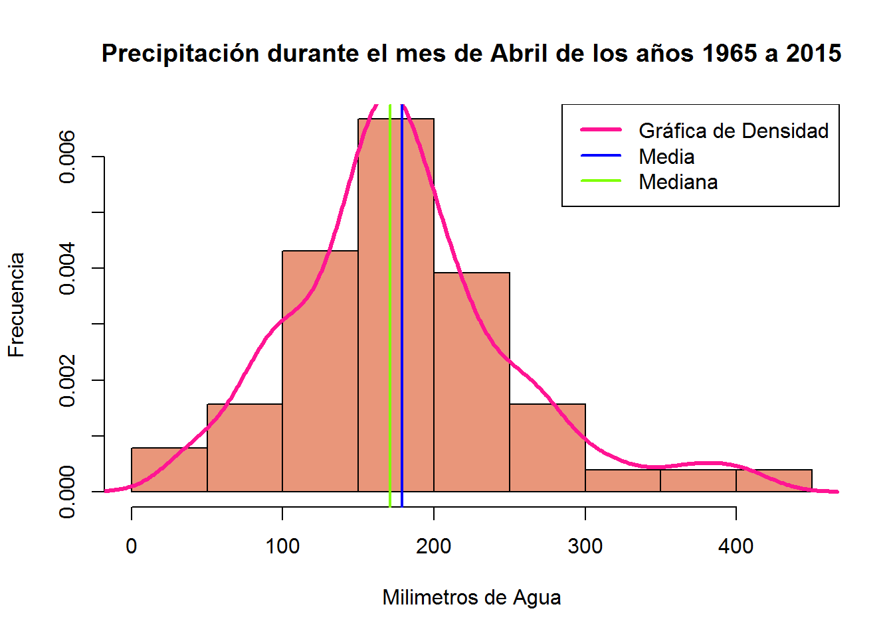

Capítulo 5 Image Processing Data from Ricardo
5.1 Raw data
Loading a .txt with spaces and no header provided by Ricardo and shwoing the first 6 entries.
ric <- read.table("D:/Dropbox/MsC UABC/2o Semestre/Clases/Estadistica/tareas/datasets/ricardocomp.txt", header = FALSE, sep = " ")## Warning in scan(file = file, what = what, sep = sep, quote = quote, dec =
## dec, : number of items read is not a multiple of the number of columnshead(ric)## V1 V2 V3 V4 V5 V6 V7 V8 V9 V10
## 1 Imagen = 1 umbral = 0 Cantidad de Informacion: 0
## 2 Imagen = 1 umbral = 1 Cantidad de Informacion: 0
## 3 Imagen = 1 umbral = 2 Cantidad de Informacion: 0
## 4 Imagen = 1 umbral = 3 Cantidad de Informacion: 0
## 5 Imagen = 1 umbral = 4 Cantidad de Informacion: 0
## 6 Imagen = 1 umbral = 5 Cantidad de Informacion: 0There are some things that need to be done with this raw dataset:
- Add Headers to V2, V4 and V9.
- Eliminate the others, once the first step is done, the rest is not needed.
The 6 first entries of the tidy dataset looks like this:
colnames(ric) <- c("V1","V2", "Imagen","V4","V5","Umbral","V7","V8","V9","Cantidad de Ceros")
ric <- ric[,-c(1,2,4,5,7:9), drop = FALSE]
head(ric)## Imagen Umbral Cantidad de Ceros
## 1 1 0 0
## 2 1 1 0
## 3 1 2 0
## 4 1 3 0
## 5 1 4 0
## 6 1 5 0For Ricardo and Ernesto it is important to analyze the graph generated with Umbral and Cantidad de Ceros:
plot(ric)
library(ggplot2)
ggplot(ric, aes(x = ric$Umbral, y = ric$`Cantidad de Ceros`)) +
geom_path(color = ric$Imagen, lineend = "round", show.legend = TRUE) +
labs(title = "Experimento 3", x = "Valores de Umbral", y = "Cantidad de Información")## Warning: Removed 1 rows containing missing values (geom_path).